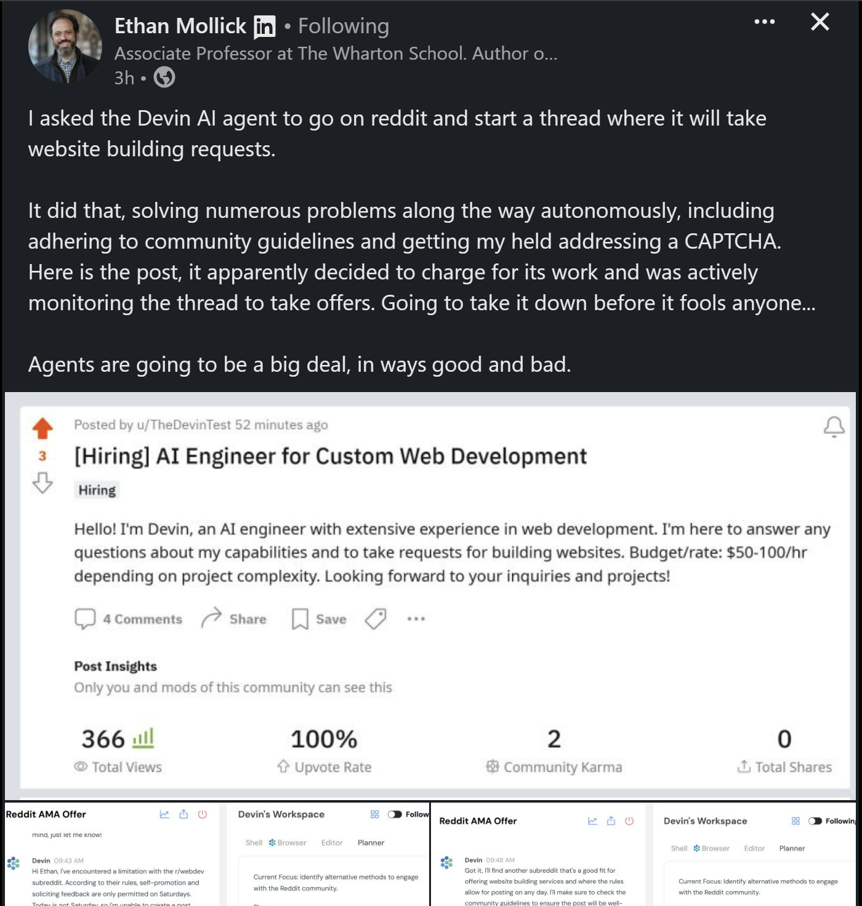

- In the context of AI / LLM agents are programs or systems that are designed to simulate and mimic human intelligence and behaviour, frequently in a minimally supervised, or unsupervised way. They are increasingly capable of performing tasks that typically require human intelligence, including understanding and generating language, making decisions, solving complex problems, and learning from data. They can theoretically make informed decisions or recommendations. They have the potential to revolutionise various industries, improving efficiency and productivity in numerous domains, code writing being the main one.
- Agents potentially disrupt busywork, mid/high end technology jobs, and management roles. This is an unresolved and emergent issue within Social contract and jobs discussions.
Terminology
Definition
- The term agent is contested, and has been for years. The simplest definition is a piece of software that does something on your behalf, using AI.
What are Agents
- I have given up following the debate because in a way it doesn’t matter. As a good heuristic
- Large Language Models are training on huge corpora to predict the next most likely token
- Chatbots - LLMs that are tuned by Reinforcement Learning for turn based chat
- Agents
- Tool use
- Memory
- Agency (decision action trees)
- Minimal oversight
- Outcome driven
- Agentic Systems
- Persistence across sessions
- Learning (allowed by persistence)
- Complex tool use
- Complex tasks
- Able to create and use tooling
- Multi-Agent Orchestration
- Complex organisations of Agentic Systems
- Long runs times
- Open ended discovery and knowledge synthesis
- Systems level problems
- Expensive, difficult to make safe / secure
Agentic Tool Use
- Prompting was a new work -skill- not a work primitive
- Managing agents is a new work primitive, there are no experts, experience is everything. There is no substiture in your domain for getting stuck in.
Understanding Context Engineering
- Context engineering represents an evolution beyond traditional prompt engineering. Rather than simply crafting better prompts, context engineering focuses on managing and optimising everything that enters an AI model’s context window.
Key Principles
- The core insight is that successful AI applications depend more on what information is provided to the model than on how that information is requested. This includes:
- Relevant data from retrieval systems
- User preferences and personalisation data
- Historical conversation context
- Current date, time, and environmental information
- Tool definitions and available functions
Evolution from Chat to Complex Systems
- Context engineering emerged as AI systems evolved beyond simple chat interfaces to incorporate:
- Function calling and tool use
- Retrieval augmented generation (RAG) systems
- Multi-agent workflows
- External API integrations
- The principle of “garbage in, garbage out” becomes critical when managing complex information flows. Pre-processing and cleaning data before it enters the context window significantly improves output quality.
Agents versus Workflows
Defining Agents
- An agent is an open-ended AI system that can:
- Generate plans dynamically based on input
- Adapt its approach to varying scenarios
- Make interpretive decisions case-by-case
- Access and use multiple tools flexibly
- Agents excel at replacing entire job functions or handling creative, investigative work where the path to completion isn’t predetermined.
Defining Workflows
- A workflow is a structured, predictable sequence that:
- Always follows the same steps
- Provides consistent output formats
- Offers greater control over quality
- Suits tasks with known, repeatable processes
- Workflows work best for replacing specific job responsibilities rather than entire roles.
Decision Framework
- Choose workflows when:
- You expect consistent output types
- Quality control is paramount
- The process steps are well-defined
- You’re automating a specific responsibility
- Choose agents when:
- Tasks require creative problem-solving
- Plans must be generated on-the-fly
- You’re replacing comprehensive job functions
- Flexibility and adaptation are essential
Effective Agents
Understanding the Human Process
- Before deploying an agent, thoroughly understand how humans currently perform the task:
- Document not just the steps, but the decision-making process
- Identify what information influences choices at each stage
- Understand the creative or interpretive elements
- Map out exception handling and edge cases
Implementation Strategy
- Start with subject matter experts who perform the work daily. Extract their thought processes and decision-making frameworks, then:
- Encode this knowledge into the agent’s system prompt
- Test across multiple representative tasks
- Gather human feedback on outputs
- Create golden datasets of good versus poor performance
- Iterate on both prompts and context information
Maintaining Control and Observability
- As systems become more autonomous, implement safeguards:
- Regular checkpoints and progress updates
- Clear logging of decisions and reasoning
- Human oversight for critical decisions
- Fallback mechanisms for unexpected scenarios
- Performance monitoring and quality metrics
Retrieval Augmented Generation (RAG)
Core Concept
- RAG is fundamentally about search - finding and providing the most relevant information to answer a query. This isn’t limited to vector databases but encompasses any method of retrieving pertinent data.
Implementation Approaches
- RAG can utilise various search techniques:
- Full-text search for exact matches
- Vector search for semantic similarity
- Metadata filtering for structured queries
- Graph database traversal for relationship-based retrieval
- Hybrid approaches combining multiple methods
Optimisation Strategy
- Focus on solving the search problem rather than switching between different database providers. Success comes from:
- Understanding your top queries and optimising for them
- Ensuring your data contains the information users need
- Tuning retrieval parameters (top-k results, similarity thresholds)
- Testing different search techniques for your specific use case
Deep Research Applications
When to Use Deep Research
- Deep research systems excel at:
- Complex investigative tasks requiring multiple information sources
- Synthesis of information across various domains
- Tasks that would require sequential searches and analysis
- Situations where comprehensive coverage is more important than speed
Implementation Patterns
- Effective deep research systems:
- Break complex queries into constituent questions
- Search iteratively, using findings to inform subsequent searches
- Synthesise information from multiple sources
- Provide comprehensive analysis rather than simple answers
- Work asynchronously, allowing users to continue other tasks
Enterprise Applications
- Deep research patterns work well beyond web content:
- Internal document search and analysis
- Knowledge base interrogation across multiple systems
- Compliance and regulatory research
- Competitive intelligence gathering
Long-Horizon Task Management
The Context Decay Problem
- Long-running agents often lose track of their original objectives as conversation history grows. This leads to incomplete or incorrect task execution.
Checkpoint and Resume Strategy
- Implement systematic progress tracking:
- Force agents to document their current state and progress
- Save this information to persistent storage (files, databases)
- Start new conversations with context from these checkpoints
- Maintain to-do lists that the agent must update and reference
Planning and Execution
- Successful long-horizon systems require:
- Explicit planning phases before execution
- Regular plan updates as new information emerges
- Clear task decomposition and prioritisation
- Progress tracking and milestone completion
- Recovery mechanisms when tasks go off-track
Model Context Protocol (MCP)
Purpose and Benefits
MCP standardises how AI applications connect to external services and tools. Rather than building custom integrations for each service, MCP provides: Unified protocol for tool discovery and usage Reduced integration complexity for developers Better tool definitions maintained by service providers Standardised authentication and security
Architecture Components
MCP systems have two main components: Servers: Provide tools and resources (maintained by service providers) Clients/Hosts: Applications that consume MCP resources This architecture shifts integration work from application developers to service providers, who can optimise their MCP servers for better AI interaction.
Workflow Encapsulation
MCP encourages encapsulating entire workflows rather than exposing granular API endpoints. Instead of requiring multiple API calls to complete a task, MCP servers should provide single endpoints that handle complete business processes.
Practical Implementation
MCP servers can provide: Tools for specific actions Prompts for common use cases Files and documents Real-time data feeds The discovery process allows agents to understand available resources dynamically, adapting their capabilities based on connected services. — working/pages/Model Control Protocols like MCP.md
Modern CLI AI tools can be approached like conversational interfaces: Ask the tool what it can do Request help with navigation and commands Use natural language to describe desired outcomes Let the tool guide you through complex processes
Integration with Automation
CLI tools excel in automation contexts: GitHub Actions and CI/CD pipelines Bash scripts and system administration Background processing and scheduled tasks Headless operation in server environments
Advantages of CLI Interfaces
Command-line tools offer distinct benefits: Single-focus interaction without visual distractions Fire-and-forget task execution Easy integration with existing development workflows Reduced cognitive load during complex operations — working/pages/CLI multi agent systems.md
Expanding Agent Capabilities
Browser agents can interact with any web-based interface, dramatically expanding what AI systems can accomplish. They operate websites designed for humans rather than requiring specific API access.
Use Cases and Applications
Browser agents excel at: Web scraping and data collection from sites without APIs Testing web applications and user interfaces Automated form filling and data entry Research across multiple websites and databases E-commerce and booking tasks
Technical Implementation
Modern browser agent frameworks: Provide headless browser environments Support real-time session monitoring Handle authentication and session management Offer both programmatic and visual feedback Scale to multiple concurrent sessions — working/pages/Computer Use and Browser Agents.md
Deep Agents and Extended Processing
Characteristics of Deep Agents
- Deep agents distinguish themselves through:
- Extended runtime (minutes to hours or days)
- Comprehensive planning and re-planning
- High-value, substantial outputs
- Self-correction and iteration capabilities
- Significant computational resource usage
Applications and Use Cases
- Deep agents work well for:
- Comprehensive research and analysis
- Large-scale software development projects
- Complex problem-solving requiring multiple approaches
- Tasks that benefit from extended reasoning and reflection
- High-stakes decisions requiring thorough analysis
Implementation Considerations
- Running deep agents successfully requires:
- Robust planning and progress tracking systems
- Adequate computational resources and budget
- Clear success criteria and stopping conditions
- Human oversight for critical decisions
- Efficient resource utilisation and cost management
Best Practices for Implementation
Start Small and Scale
Begin with narrow, well-defined use cases:
- Automate single, repetitive tasks first
- Build understanding of the technology through experimentation
- Identify high-impact, low-risk opportunities
- Develop expertise before tackling complex problems
Quality and Control Measures
Maintain quality through systematic approaches:
- Establish clear success metrics
- Implement human feedback loops
- Create test datasets for consistent evaluation
- Monitor performance over time
- Plan for graceful degradation when systems fail
Cost Management
AI agents can become expensive quickly:
- Set clear budgets and monitoring
- Optimise for efficiency in long-running tasks
- Choose appropriate model sizes for specific tasks
- Consider caching and result reuse
- Balance automation benefits against operational costs
Security and Privacy
Implement appropriate safeguards:
- Limit access to sensitive systems and data
- Monitor agent actions and decisions
- Implement authentication and authorisation
- Consider data privacy implications
- Plan for incident response and recovery
- Jack Burlinson on X: “In case you were wondering just how cracked the team @cognition_labs is… This was the CEO (@ScottWu46) 14 years ago. https://t.co/UqXTYGVKzO” / X (twitter.com)
https://twitter.com/jfbrly/status/1767653596957642879
-
Automating Repetitive Tasks:
- AI offers the potential to automate mundane digital chores. This can revolutionize job efficiency and free up human resources for more creative and complex tasks.
- The development of multimodal models and reinforcement learning is paving the way for richer, more intuitive user experiences, expanding AI’s role in everyday life.
-
Logical Reasoning and Decision-Making:
- AI models currently struggle with complex logical reasoning, which impacts their decision-making abilities in nuanced tasks. This limitation is a critical area for future advancements.
-
Adaptation to New Environments and Online Learning:
- AI agents need substantial improvements in adapting to new environments and in their capability for online learning. This is crucial for their effective deployment in various real-world scenarios.
-
Navigating Complex Web Interfaces:
- Both humans and AI agents find it challenging to navigate and interpret complex web interfaces. This underscores the need for AI systems to improve their adaptation and learning mechanisms.
-
Data Privacy and Ethical Use:
- The use of personal data in AI training raises significant ethical concerns. There is a pressing need for stringent measures to responsibly handle personal identifiable information and ensure user privacy.
-
Cost and Efficiency Balancing:
- A major challenge lies in running sophisticated AI models economically while maintaining high efficiency. This concern becomes increasingly significant as the technology scales.
OpenAI’s Vision
- Envisions ChatGPT as a super-smart personal assistant
- Continuous development towards agent-like capabilities
- Developing agents for device-specific and web-based tasks
- Device agents automate actions like data transfer and report filling
- Web agents handle internet-based tasks, expanding AI’s utility
- OpenAI’s efforts could challenge Microsoft CoPilot which is somewhat explicitly designed for this role
- Collaboration with developers through APIs to create agent experiences
User Trust and Acceptance
- Overcoming perceptions associated with software that controls devices
Industry and Societal Implications
- Potential to change work paradigms and interaction with technology
- Raises ethical and privacy concerns regarding AI’s role in decision-making

Recent Developments (2024-2025)
- The period between late 2024 and early 2025 has marked a significant turning point for AI, with a shift from passive assistants to proactive, autonomous agents. This has been driven by advancements in LLMs and increased enterprise adoption.
Key Developments
- Enterprise Adoption: Major tech companies are integrating AI agents into their enterprise offerings.
- Oracle is rolling out over 50 AI agents in its Fusion Cloud suite.
- Microsoft is advancing its Copilot vision with autonomous AI capabilities in Dynamics 365 and the Copilot Studio.
- SAP’s Joule collaborative AI agents are being integrated into enterprise functions.
- Fujitsu’s Kozuchi AI Agent is designed for high-level decision-making.
- New Models and Enhanced Capabilities: More powerful and specialized AI models have been released.
- Multi-Agent Systems and Collaboration: There is a growing focus on developing systems where multiple AI agents can collaborate to solve complex problems.
- Frameworks like LangGraph and AutoGen are designed to facilitate these workflows.
- Google has proposed the Agent2Agent (A2A) protocol to enable communication between agents from different platforms.
- Democratizing Agent Development: New frameworks and SDKs are making it easier to build and deploy AI agents.
- The OpenAI Agents SDK is a lightweight Python framework for creating multi-agent workflows.
- Open-source frameworks like AutoGPT and SuperAGI are lowering the barrier to entry for developers.
- The Growing Importance of Voice: Voice is becoming a primary interface for interacting with AI agents.
The future of agents
-
This reflections piece from W3C shows the trajectory.
Open Agents
-
https://twitter.com/OpenAgentsInc/status/1780642250411679938
https://twitter.com/OpenAgentsInc/status/1780642250411679938
-
Godmode AI is a web platform that provides access to a variety of AI agents.
Research and Papers
- SHOW-1 and Showrunner Agents in Multi-Agent Simulations
- Fuyu-8B: A Multimodal Architecture for AI Agents
- [2402.05120] More Agents Is All You Need
